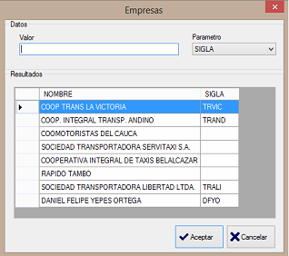
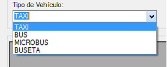

Este reporte nos genera la información de los cupos de la empresa que seleccionemos
dependiendo al Tipo de Vehículo que escojamos. Este submódulo de reportes es
importante para llevar un control de los cupos asignados que tienen las empresas de
servicio público.
Para generar un informe en este módulo, debemos seguir estos pasos:
Primero: Damos clic en el botón Buscar Empresa y seleccionamos la empresa de servicio
público que necesitemos.

Segundo: Escogemos el tipo de vehículo.

Tercero: Damos clic en el botón Buscar Vehículos. Si la consulta es exitosa nos traerá en
la parte inferior del formulario los vehículos asignados a dicha empresa. En caso de que
la consulta no arroje nada, es porque la empresa no tiene cupos asignados a ese tipo de
vehículo.
Importante:
Los informes generados en este módulo, Pueden ser exportados en
formato Excel o en PDF.